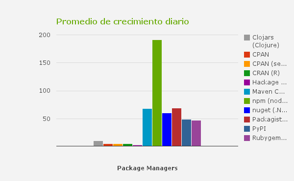

Introducción a
Por Diego Paez
paraJS meetups La Plata
¿Qué es?
- Una Plataforma.
- Construida sobre un motor que interpreta JS, llamado V8.
- Permite el desarrollo de apps "server-side" usando JS.
Instalación
2 opciones:
npm
Es el manejador de paquetes oficial de node.
- Lo conseguimos cuando instalamos node.
- Podemos pensarlo como una herramienta muy similar a apt.
$ npm install npm -g # actualiza npm
npm - En comparación

npm
API
$ npm install [paquete]$ npm search paquete$ npm remove paquete- Varias opciones mas...
package.json
Es un archivo especial que describe información relacionada a nuestro paquete|app|modulo.
$ npm init # Genera un nuevo package.json- Podemos indicar versión (semantica),
- si es publico|privado,
- dependencias,
- script de arranque y testeo,
- etc.
- ➵ Nodejitsu package.json
Módulos
var PI = Math.PI;
exports.area = function (r) {
return PI * r * r;
};
exports.circumference = function (r) {
return 2 * PI * r;
};
// Luego... En otro modulo:
var circle = require('./circle.js');
console.log( circle.area( 2 ) ); // PI * 2 * 2
Módulos
- Modulo 1⬌1 Archivo E.g.:
Busca por defecto a index.js si no hay package.json.var lib = require('./');
Módulos - Características
- Todo es privado.
- Elegimos que compartir usando exports, i.e:
exports = myFunction;module.exports = myConstructor;- ➵ Core Modules
Don't call us,
we'll call you.
The Event Loop
- "Plataforma orientada a eventos".
- 1 único thread. (podemos tener workers)
- Callbacks son moneda corriente.
- stack (pila) de eventos.
Understanding event loops and writing great code for Node.js
The Event Loop - Idea
- setup de nuestro modulo.
- Luego a escuchar por eventos
- "onEvent" hacer algo -> ejecutar callback.
The Event Loop - Problemas
- Podemos generar una piramide de callbacks. 😣
- Dificil debuggear si usamos funciones anónimas. 😣
- Hay soluciones. 😄
The Event Loop - Soluciones
- Para evitar la piramide podemos:
- usar promesas (todo un tema) y/o 😉
- evitar funciones anónimas. 😄
- Ahora podremos saber que función falla cuando hacemos debugging. 😄